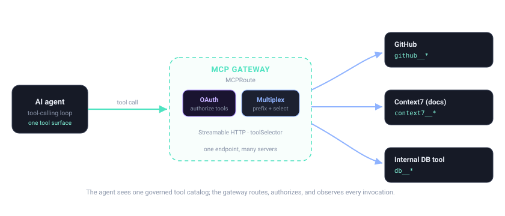

5.3 — Tool routing, aggregation & multiplexing
Bottom line
One agent connection, many tool servers behind it. An MCPRoute with multiple backendRefs aggregates several MCP servers into one tool surface; the gateway multiplexes them by prefixing every tool name server__tool so collisions can't route the wrong call, and toolSelector exposes only the subset you intend. By the end you can put two MCP servers behind one route, see both servers' tools (prefixed) in a single tools/list, and narrow the catalog to a safe set.
Why this exists
In 5.2 you fronted one tool server with an MCPRoute. Real agents need several at once — a GitHub server, a docs server, an internal-API server — and the naïve fix is to open three MCP connections from the agent, which is exactly the per-tool-client sprawl 5.2 set out to remove, just at a larger scale.
Aggregation collapses that back to one. You list multiple backendRefs on a single MCPRoute, and the gateway presents their combined catalog over one session at spec.path. Two new problems appear the moment you do this, and the gateway solves both: collisions (two servers each ship a tool called search) and over-exposure (a server ships 40 tools, 3 of which are destructive). Prefixing handles the first; toolSelector handles the second. This session is where "front a tool server" becomes "operate a tool estate."
From Apigee
This is a facade proxy that aggregates several backends behind one route — but for tools. In Apigee you'd point one proxy at three target servers and use RouteRules to disambiguate; here one MCPRoute lists three backendRefs and the gateway disambiguates by prefixing tool names (github__, context7__) instead of by path or RouteRule.
| Apigee facade | MCP aggregation |
|---|---|
| One proxy, several TargetServers | One MCPRoute, several backendRefs |
| RouteRule selects the target | Tool-name prefix selects the backend |
| Resource paths scope the API surface | toolSelector (include/includeRegex) scopes the tool surface |
| Two backends sharing a path → routing conflict | Two servers sharing a tool name → disambiguated by prefix |
From Java microservices
Today an agent framework injects N clients — one bean per tool server, each with its own URL and wiring. Aggregation makes the gateway your service-discovery layer: the agent depends on a single tool endpoint and one catalog, the way a service mesh gives you one logical address while routing to many instances. You stop maintaining a tool registry in agent code; the registry is the merged catalog the gateway publishes, and adding a server is a YAML backendRef, not a new injected client.
Where the analogy breaks
A facade proxy routes by path, which is hierarchical and collision-proof by construction. MCP routes by tool name, a flat namespace where two servers genuinely can ship the same name — so the disambiguator (server__) is part of the tool's identity, not just its address. And unlike service discovery, where instances are interchangeable, each MCP backend exposes a different set of tools, so "discovery" here also means catalog merging and filtering, not load-balancing equivalent endpoints.
The concept
The gateway sits between the agent and N MCP servers, merging their catalogs into one prefixed, filtered surface:

Three mechanics do the work. Aggregation: each backendRef is one MCP server; the route's catalog is their union. Multiplexing / prefixing: the gateway namespaces every tool as server__tool (e.g. github__issue_read, context7__get_library_docs) and strips the prefix again before calling upstream — so the server still sees its native tool name, but the agent sees a globally unique one. Selective exposure: per-backend toolSelector.include lists exact tool names, or toolSelector.includeRegex matches a family; tools not selected never appear in tools/list and cannot be called.
Watch out
Two servers with a same-named tool (say both expose search) rely entirely on the prefix to disambiguate — github__search vs context7__search. Any code, prompt, or hard-coded allow-list that assumes the bare name search is ambiguous and will route to whichever server the gateway resolves it to. Always reference tools by their full prefixed name once aggregation is in play.
Watch out
A backendRef with no toolSelector exposes that server's entire surface — including any destructive tools (delete_repo, force_push, drop_table) you never meant to hand an autonomous agent. Selection here is exposure control, not cosmetics; the security boundary that enforces who may call what comes in 5.4, but if a dangerous tool isn't selected, it isn't in the catalog to begin with.
Hands-on lab
Lab — aggregate two MCP servers behind one route, exposed safely
Prereqs: the gateway and Gateway resource from 1.5 (export $NAMESPACE and $GATEWAY_HOST), kubectl, and two MCP servers reachable in-cluster — this lab assumes github-mcp (from 5.2) and a second, context7-mcp (a docs server). An MCP client or curl over the Streamable-HTTP/JSON-RPC endpoint.
1. Declare the second MCP backend (you already have github-mcp from 5.2):
apiVersion: gateway.envoyproxy.io/v1alpha1
kind: Backend
metadata:
name: context7-mcp
namespace: ${NAMESPACE}
spec:
endpoints:
- fqdn:
hostname: context7-mcp.${NAMESPACE}.svc.cluster.local
port: 8080
2. Create one MCPRoute with two backendRefs, each scoped by its own toolSelector so only a safe subset is exposed:
apiVersion: aigateway.envoyproxy.io/v1beta1
kind: MCPRoute
metadata:
name: tools
namespace: ${NAMESPACE}
spec:
parentRefs:
- name: ai-gateway # the Gateway from session 1.5
path: /mcp # single endpoint the agent connects to
backendRefs:
- name: github-mcp
toolSelector:
include: # exact names — read-only GitHub tools
- issue_read
- issue_search
- name: context7-mcp
toolSelector:
includeRegex: # a whole read-only docs family
- "get_.*"
3. Apply both and confirm the route is programmed:
kubectl apply -f context7-mcp.yaml -f mcproute.yaml
kubectl get mcproute tools -n "$NAMESPACE" \
-o jsonpath='{.status.conditions[?(@.type=="Accepted")].status}{"\n"}'
4. List the merged catalog — one tools/list must return tools from both servers, each under its server prefix:
curl -s "https://$GATEWAY_HOST/mcp" \
-H "content-type: application/json" \
-d '{"jsonrpc":"2.0","id":1,"method":"tools/list"}' | jq '.result.tools[].name'
# → "github__issue_read" "github__issue_search"
# "context7__get_library_docs" "context7__resolve_library_id" ...
5. Call one tool from each server by its prefixed name and confirm the gateway routes to the right backend (it strips the prefix upstream):
curl -s "https://$GATEWAY_HOST/mcp" \
-H "content-type: application/json" \
-d '{"jsonrpc":"2.0","id":2,"method":"tools/call",
"params":{"name":"context7__get_library_docs",
"arguments":{"library":"spring-ai"}}}' | jq '.result'
Watch out
If tools/list returns tools you didn't select — or a GitHub tool like issue_create you left out of include — your toolSelector didn't apply. Check it's nested under the right backendRef (per-server, not per-route) and that includeRegex actually anchors the family you meant; get.* quietly also matches get_then_delete.
What success looks like: a single tools/list over one connection returns tools from both servers, every name carries its server__ prefix, and only the selected subset appears — destructive tools are absent. A tools/call on context7__get_library_docs returns a real result, proving the prefix routed it to the docs server while the agent still talks to just one endpoint.
Verify it
Common failure modes
- No prefix on aggregated names. If
tools/listshows bare names, the agent connected straight to a server instead of the MCPRoute — aggregation and selection are both bypassed. - Bare-name tool references. Hard-coding
searchinstead ofgithub__searchroutes to whichever server resolves first; with two servers exposing it, you'll silently hit the wrong backend. - Missing
toolSelectoron a backend. That server's full surface — destructive tools included — joins the catalog. Absent selection means total exposure, not a safe default. includeRegextoo loose. An unanchored or greedy pattern pulls in tools you meant to exclude. Prefer exactincludefor write/destructive families and reserve regex for clearly read-only ones.- One bad backend fails the whole route. If a single
backendRefserver is unreachable, confirm the route'sAcceptedstatus and per-backend health before assuming aggregation is broken.
Stretch goal
Aggregate a third server that deliberately ships a tool whose bare name collides with one already in your catalog (e.g. both a search). Confirm tools/list shows both under distinct prefixes, then call each and verify the result came from the intended server. You've just proven multiplexing — the property 5.4 then secures, so the right identity may call the right prefixed tool.
Recap & next
You can now put many MCP servers behind one MCPRoute: aggregating their catalogs into a single session, relying on server__tool prefixing to multiplex and disambiguate, and using per-backend toolSelector (include / includeRegex) to expose exactly the safe subset. Your agent sees one curated tool surface; operations decides what's behind it.
Next — 5.4: decide who may call each of these tools. You'll add securityPolicy.oauth and fine-grained authorization.rules so a token's scopes, claims, and CEL conditions — not just the catalog — gate every tools/call.